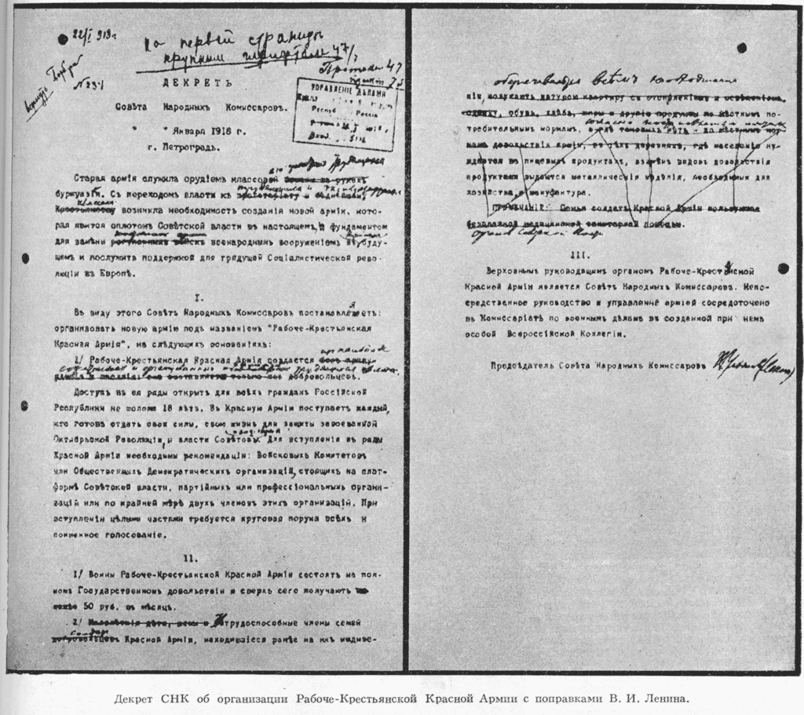
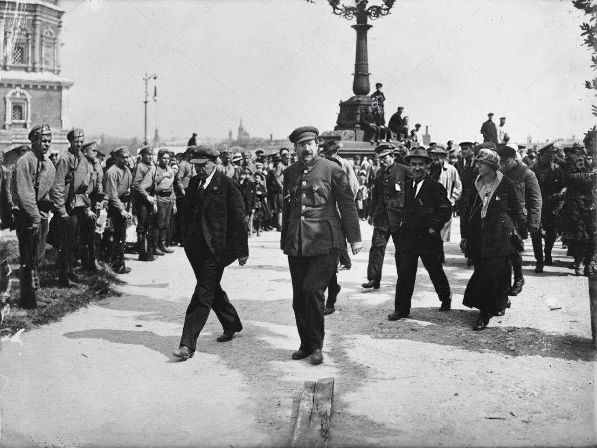
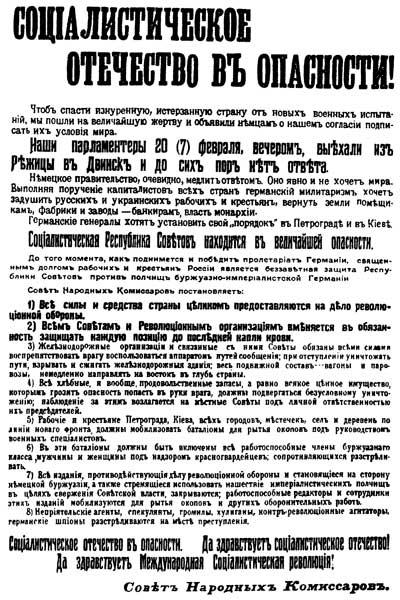

Вспомним историю
Самое время вспомнить историю! с чего всё начиналось и т.д. Вперёд! Если лень читать можно нажать на кнопку ниже и почитать краткую историю праздника:)
15 (28) января 1918 года Совет народных комиссаров Советской России издал Декрет о создании Рабоче-крестьянской Красной армии (опубликован 20 января (2 февраля) 1918 года в официальном печатном органе правительства большевиков). Подписали Декрет председатель Совнаркома Владимир Ульянов-Ленин, народные комиссары по военным и морским делам Павел Дыбенко и Николай Подвойский, народные комиссары Прош Прошьян, Владимир Затонский и Исаак Штейнберг, управляющий делами Совнаркома Владимир Бонч-Бруевич, а также секретарь Совнаркома Николай Горбунов. На фронте началась запись в новую армию солдат-добровольцев, из которых формировали красноармейские роты, мало-помалу сводившиеся в полки; но, например, в Петрограде первый пункт записи в Красную армию открылся лишь 21 февраля, то есть после начала германского наступления. В 19 часов 30 минут 16 февраля 1918 года германское командование официально заявило оставшемуся советскому представителю в Брест-Литовске, что в 12 часов 18 февраля заканчивается перемирие между Россией и Германией и возобновляется состояние войны.
18 февраля германские и австро-венгерские войска начали наступление по всему Восточному фронту. Как отмечает американский историк Юрий Фельштинский, относительно небольшие немецкие отряды продвигались, почти не встречая сопротивления: «Из-за царившей у большевиков паники и слухов о приближении мифических германских войск города и станции оставлялись без боя ещё до прибытия противника. Двинск, например, был взят немецким отрядом в 60—100 человек. В Режице германский отряд был столь малочислен, что не смог занять телеграф, который работал ещё целые сутки».
21 февраля был создан Комитет революционной обороны Петрограда во главе с Яковом Свердловым. Вечером 22 февраля в Петроград по вызову Владимира Ленина прибыл из Могилёва начальник штаба Верховного главнокомандующего, бывший генерал Михаил Бонч-Бруевич, фактически возглавивший оборону Советской России от внешнего врага. После совещания с Лениным и другими представителями власти Бонч-Бруевич приступил к работе в Смольном, где разместился в комнате по соседству с кабинетом Ленина
23 февраля 1918 года было опубликовано воззвание СНК от 21 февраля «Социалистическое отечество в опасности!», а также «Воззвание военного главнокомандующего» Николая Крыленко, которое заканчивалось словами: "... Все к оружию. Все на защиту революции. Поголовная мобилизация для рытья окопов и высылка окопных отрядов поручается советам с назначением ответственных комиссаров с неограниченными полномочиями для каждого отряда. Настоящий приказ рассылается в качестве инструкции во все советы по всем городам". 23 февраля председатель СНК Ленин опубликовал в « Правде» статью «Мир или война», в которой настаивал на необходимости немедленного заключения мира; в конце статьи он призвал: "... готовить революционную армию не фразами и возгласами (как готовили её те, кто с 7-го января не сделал ничего для того даже, чтобы попытаться остановить бегущие наши войска), а организационной работой, делом, созданием серьёзной, всенародной, могучей армии."
Утром 23 февраля Совнаркому был предъявлен германский ультиматум. На заседании ЦК РСДРП Ленин, несмотря на сильное сопротивление, склонил членов ЦК принять ультиматум. Ленин потребовал заключения мира на германских условиях, пригрозив в противном случае подать в отставку. Ленин считал, что главное — «ценой любых потерь сохранить островок уже существующей пролетарской власти». В ночь на 24 февраля он был принят. Однако наступление немецких войск продолжалось до подписания мирного договора 3 марта
Кстати сказать, приурочивание празднества годовщины РККА к 23 февраля носит довольно случайный и трудно объяснимый характер и не совпадает с историческими датами.
РККА, 1933 год